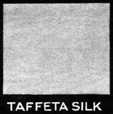

1926—The New-Way Course in Fashionable Clothes-Making
Lesson 17—Textiles
The Story of Textiles
To tell the true story of textiles, we would have to go back before the time of man. For even before man inhabited this earth, the textile art flourished! Spiders wove intricate silken webs, patterning with infinite pains the filmy threads that were to form their home. Birds interlaced twigs and grass into cozy little nests, and even some types of trees and plants formed a sort of cloth by closely interweaving their inner fibers. These early attempts at weaving presaged the wonderful textile industry of today.
The very first cloth made by man was from the bark of a tree. The bark was soaked in water until soft and pulpy; then it was beaten with rough wooden mallets to felt the fibers together. The "cloth" was dried and bleached in the sun and finally ornamented with vegetable dye.
Being successful with this crude attempt at utilizing the bark of the tree for clothing, the people of that era began to search for other useful methods of weaving together bark and grass and twigs. Soon they discovered that rushes and grass could be interlaced to form little mats to sleep on, and that reeds and twigs woven together formed useful little baskets. They began to search for the finest twigs and rushes, the sweetest grass and reeds—and in their rude mats and baskets found a way to express their ideas of art and beauty.
Many museums today exhibit beautiful examples of primitive weaving. It is almost amazing to see how finely twigs and grass are woven together and how artistically colors are combined. Beautiful leaf and flower designs are in some cases evident. The method of achieving this design, by those early originators of the textile art, is interesting. A leaf or flower was placed on the dye covering the woven material, and this dye-covered material was then placed in the direct rays of the sun. The outline of the leaf or flower was transferred to the material by the sun and then a small rounded twig was used to press down the design more firmly, fixing the design in place.
Spinning
 But it was not until spinning and spinning-yarn were invented that the actual textile art began. For a great many years, it seems, there was no progress. The early men and women were content with their coarse "bark cloth" clothing—or with none at all. They were no doubt delighted with their baskets and mats and sought no further possibilities for weaving. But somehow the idea of using threads to be spun into materials was evolved—history does not tell how.
But it was not until spinning and spinning-yarn were invented that the actual textile art began. For a great many years, it seems, there was no progress. The early men and women were content with their coarse "bark cloth" clothing—or with none at all. They were no doubt delighted with their baskets and mats and sought no further possibilities for weaving. But somehow the idea of using threads to be spun into materials was evolved—history does not tell how.
No one knows definitely the actual date of the origin of spinning, although a certain authority claims that it dates back before 2000 B.C. But to follow spinning through its gradual stages of development is as interesting as it is valuable to the student of dress.
Historians tell us that early nomadic tribes used threads to fasten together the skins which they used to protect them from the ravages of rain and cold. How they discovered thread is unknown. It is barely probably that wool torn from the sheep while passing through bushes or brambles, suggested the idea to them.
Soon after, we find that thread is wound upon a stick and spinning done by hand. Later this stick developed into the spindle, but until 1500 A.D. spinning was done entirely by hand. Women soon found that if a piece of wood was attached to the lower end of the stick, or spindle, it could be whirled around at a much greater speed. This weight at the end of the spindle came to be known as the whorl. And as a subsequent development the need of something to fasten the wool to so that it would not become ravelled brought the distaff. At first, it was simply a piece of twig or wood around which the wool was wrapped. It was held in the hand or tucked in the belt, as most convenient.
The Advent of Machinery
Spinning by hand was cumbersome, tedious and a very slow process indeed. Men—and women, too—began to look around for a more satisfactory method of weaving threads together into cloth. At the beginning of the sixteenth century, a one-thread machine was invented which was a tremendous stride ahead of the old by-hand methods. It enabled the spinner to produce about seven times more yarn than by the distaff and spindle. New improvements and new inventions were gradually made, until the making of cloth was taken entirely out of the hands of the women in the homes and spinning was relegated into the realms of the "old-fashioned."
But whether woman makes her own cloth or not, whether crude spinning wheels or modern machinery produce the cloth for things-to-wear, design and an artistic interpretation of beauty inherently are part of woman. And there is no reason why woman's natural love of expression should be stifled merely because huge and powerful machines today accomplish in a few minutes what took her primitive ancestors days and weeks and months. The fact that exquisite materials are made in tremendous quantities for her to choose from, should only serve as an incentive for her to create her own dresses and blouses, to interpret her beauty ideals in line and color and harmony.
But in order to be a wise and intelligent buyer of the materials that she wishes to transform into beautiful clothes, the woman must have a general understanding and a practical knowledge of fabrics. She should know the names and the qualities of the fibres used in the manufacture of cloths. She should know a little about the methods of production and preparation of these fibres. She should know something of the processes of weaving, of the value of different weaves, of the selection and uses of materials.
In these pages we will endeavor to familiarize you with the names of different textiles, their comparative values and their uses in the making of clothes. But first, let us tell you the interesting stores of cotton, wool, linen and silk.
Cotton
Though the cheapest, cotton is the most important textile fibre. Its uses are manifold. More clothing is made from cotton than any other fibre in the world. As your own expert clothes-maker, you will probably purchase a great deal of cotton material and you will find the following story of cotton valuable in making your purchases.
The cotton plant is a shrub which rarely reaches a greater height than six feet. It grows in warm, humid climates; cotton-growing is one of the most important industries of the southern part of the United States. The cotton is picked as soon as it is ripened, and is separated from the seeds by a process known as ginning. Its fibres vary in length from one-half to two inches.
After cotton has been freed from the seed, it is baled and shipped to the cotton mills all over the world. At the mills, the bale of cotton starts upon its journey through various interesting processes until it finally emerges in the finished form the manufacturer wishes to sell it—cotton threads, cotton cloth, towels, laces and cotton underwear. But what we are most intimately concerned with is the transformation of baled cotton into cotton cloth.
The manufacture of cloth existed in Greece in the days of Homer. Though many modifications have come since those early days, the same three steps to the process of weaving remains—even in our most modern machinery. First there is shedding which means the lifting of certain warp threads through which the shuttle is passed. Picking means the passing of the shuttle through the threads, and battening implies the pressing of the woof thread against the preceding ones to make the cloth firm and even.
Cloth is made of threads which run lengthwise, called the warp threads; and of threads that run crosswise, called the filling or woof. Under the microscope the cotton fiber usually presents the appearance of a flat, slightly twisted ribbon, with thickened ends. It has less affinity for dyes than animal fibers, but makes up for this deficiency by being resistant to the action of moths and insects and by having a great power of heat conduction. Linen is the coolest material known, but cotton is a close second.
In choosing between two grades of the same type of cotton material always consider the wearing qualities of the materials in question. Very often, for the additional cost of a few cents a yard, three or even four times the amount of wear can be acquired. The firmness of the weave and the quality of the fiber should be carefully considered. Untwist one thread of the cloth and notice the length of the separate fibers. Remember that a long fiber indicates strength and excellent wearing qualities, while a short fiber indicates cloth that will not give long service. It is also well to remember, when purchasing cotton material, to select the greater widths as they can be cut to better advantage.
When cotton fiber has no luster of its own, it is often treated by a chemical process called mercerization after John Mercer. In 1844 he discovered that cotton can be given a high degree of lustre and at the same time strengthened by subjecting it to the chemical action of caustic alkali and a strong tension to prevent contraction. Mercerized cotton has a lustre not unlike that of linen.
Wool
The wool industry is so old that history cannot definitely trace it back to its origin. The early Greeks and Romans produced woolen fabrics of great beauty and firmness. As far back as the days of Homer, wool was manufactured in Greece. The Bible tells us of many famous men of long ago who tended sheep on the hillside at the same time that they wrote their immortal psalms. Alexander, when he journeyed to India, saw beautiful woolen shawls being made. Modern methods of textile manufacture have made wool fabric excellent for garments intended to give warmth and at the same time present a fashionable and attractive appearance. Wool is, indeed, one of the most practical materials known in garment construction.
Although the greatest source of wool is from sheep, other animals such as the llama, the alpaca, certain species of goats, and even the camel provide wool from which fabrics are made. However most of the wool on the market comes in the form of fleece wool from sheep, and is sorted according to quality and length of fiber. A carding machine cleans, separates and straightens the fibers and prepares the yarn for weaving.
Wool fiber is very soft, elastic and varies greatly in strength. As it is a poor conductor of heat it is extremely desirable for clothing. It can be dyed much more readily than any other fiber. Woolen materials are not always necessarily all wool. Very often, by blending new wool with shoddy, manufacturers are able to produce a woolen material that serves its purpose very well and that may be sold at a cost very much lower than would otherwise have been possible. Mixtures of wool and silk, wool and cotton, and wool and linen are not uncommon in the manufacture of textiles.
In selecting woolen materials, the design and weave of the fabric should be taken into consideration. Hold the cloth up to the light and you will be able to see the design clearly, and you will also be able to detect immediately any defects in the fabric. A close, twilled weave in woolen materials makes a firm material that will give excellent wear. Looser weaves do not wear or retain their shapes so well. Yet, it must also be borne in mind that the close weaves become shiny more quickly than those that are loose.
In good woolen fabrics, the dye is soft and even. Sharp, harsh colors, therefore, indicate a poor grade of material. It is always wisest to examine woolen materials in the full daylight without any artificial lights shining on the fabric. Listed elsewhere in this lesson are the names and uses of woolen materials used in the making of clothes. Study this list carefully; familiarize yourself with the names. You will find the information gleaned from this lesson very valuable when you have mastered clothes-making and you purchase materials in large quantities to make your own pretty clothes.
Linen
There is every indication in history that the value of flax as a source of linen was first discovered in Egypt. Linen mummy clothes of remarkable fineness of thread and evenness of weave have been discovered in old Egyptian tombs. Picture writings on the sides of the tombs prove that the industry flourished in that day. The sheep was held to be a sacred animal, according to the pictures, and flax plant represented the emblem of some sort of deity. Even the Bible tells us (Genesis 41:42) that Pharaoh arrayed Joseph in vestments of fine linen.
But the linen industry was not confined to Egypt for any great length of time. It soon spread to Babylon, to Greece and to Rome. The use of linen in wearing apparel was as prevalent in Europe in the Middle Ages as cotton is universal in its use today. Even today, although cotton has largely replaced linen in the matter of cloth for wearing apparel, it can never be replaced as the ideal material for table covers, napkins, and other purposes where its lustre, excellent laundering qualities and smooth, fine texture make it peculiarly appropriate.
Linen is the bast fibre of the flax plant. It lies just under the outer bark of the flax plant. To separate the bast fibre from the rest of the plant is a long and tedious process and the weaving of linen is infinitely more difficult and complicated than the weaving of cotton.
Bleaching is one of the most important processes in the finishing of linen fibre. It may be bleached in the cloth or in the yarn, and is done by dew and sun. Sometimes chemicals are also employed, but unless great care is taken the texture of the fibers may be damaged. It is positively known that linen loses from twenty-five to thirty per cent in bleaching when chemicals are used. Probably this explains the tremendous difference in wearing propensities between the old home-spun and the modern machine-made linens.
Linen does not dye easily, nor does it retain color well. White linen always wears longer than colored linen. As dresses made of white linen will require a great deal of laundering, it is always wisest to purchase very good quality. Untwist one of the threads and pull it apart slowly and steadily. If the fibers remain stretched and pointed the linen is of good quality and will wear well.
The lustre of linen is retained as long as the fibre lasts. The absorptive power of this material is unusual, and some qualities of linen actually absorb water without feeling damp. It is for this reason that the fabric is so ideally adapted for use in making towels.
When purchasing linens, always rub between the fingers to remove the starch. Choose the fabric which is firm and heavy and with threads that are not too fine. Particular attention should be paid to the design in selecting table linens as large designs developed in long threads will wear very poorly. Always insist upon linens made with small designs showing shorter threads on the surface. Not only have they greater wearing qualities, but they are invariably prettier and more artistic.
Silk
The study of silk is especially interesting. Silks have a certain charm, a certain fascination that no other fabrics can boast. Since time immemorial silk has been the queen of materials—and the textile industry of today has interpreted this fabric in so many exquisite weaves and designs that one actually enjoys transforming it into charming blouses and dresses.
Historians tell us that the silk industry originated in China about 2700 B.C. It was not until the twelfth century that the industry was practiced in Italy, and in the century immediately following it spread to France. Japan very early became the center of great silk culture—and even today Japanese silks are noted for their fineness of texture and weave.
Silk fibre is a secretion emitted by the silk worm in the formation of a cocoon—the worm encloses itself in this cocoon before its transformation into a chrysalis. Most of the silk of commerce today is obtained from the cocoons of the mulberry silk worm which feeds on the leaves of the mulberry tree.
Of all the four fibers, silk is the smoothest and finest. It is extremely elastic. It may be reeled from cocoons in length from four hundred to one thousand and three hundred yards. It can be dyed more easily than cotton or linen and takes the highest lustre of the four fibers. In its finished state, it is undoubtedly the prettiest of all fabrics manufactured.
Under the microscope, silk fiber appears as a smooth, structureless filament, quite transparent and very regular in diameter. If seen under the microscope after the gum has been removed, it has a very high lustre. Silk is the strongest fiber known and can be stretched almost to twenty-five percent its original length, but weighting causes a decrease in both elasticity and strength. This weighting is often added to the raw silk to make the finished fabric appear heavier.
Coloring is applied to silk either by yarn or piece dying, or by printing. Printed silks are very appropriate for making dresses, but if they are weighted they will not wear well and will probably crack if plaited or folded. To test silk for weighting, pierce with a rather thick pin. If a hole is left in the material, it contains weighting; if the threads merely spread apart and return to their original position when the pin is removed, the material is not weighted.
Textiles
The Process of Weaving (Illustration XVII-1)
Weaving is the interlacing of two threads at right angles to produce cloth. The warp is the lengthwise thread running with the selvedge. It is the thread put in the loom first to make the foundation of the cloth. The threads running across the cloth from one finished edge to the other are the woof threads. To make a good strong durable cloth the woof threads should be as strong as the warp threads.
The finished edge of the cloth formed by the woof threads turning back through the warp is the selvedge. In most materials the selvedge threads are more closely woven than the balance of the cloth. Before cloth is made into garments the selvedge should be cut off, as it makes a hard bulky seam, and it also shrinks more than the rest of the material when washed.
Plain, twill and satin weaves are the fundamental weaves. All other styles of weaving are developed from the combining of two or three of these.
The Plain Weave (Illustration XVII-2 and 3)
Most materials are made in the Plain Weave. Possibly 60% of all cotton and silk, 50% of all wool and 25% of linen materials are plain weave.
In the plain weave the woof thread runs under and over the warp, and the warp threads run over and under the next woof threads.
While the plain weave does not produce the strongest cloth most material is made this way as it is the least costly, less labor and raw material being used.
A Few Plain Weave Materials and Their Uses
Cotton
- Textile
- Description
- Use
- Batiste
- Fine soft plain weave in white and colors.
- Gingham
- Best known cotton fabric, patterned in checks, stripes or plain. Quality varies from very coarse heavy cloth to fine soft material.
- Summer dresses, play dresses, aprons and house dresses.
- Lawn
- Sheer fabric usually weighted with starch.
- Dresses, aprons and linings.
- Nainsook and Longcloth
- Fine, soft-finished material; plain cotton.
- Infant's wear; lingerie.
- Organdie
- Sheer, fine material with stiff finish. Plain colors and figured. Some qualities launder very nicely.
- Dresses, waists, trimmings, collars and cuffs.
- Percale
- Plain weave, printed or plain.
- Children's clothes, house dresses and aprons.
- Silk Mull
- A mixture of cotton and silk. Plain and figured weave.
- Linings and dresses.
- Voile
- Plain loose weave. In figured or plain patterns.
- Used for dresses, waists, blouses and children's wear.
- China Silk
- Glossy, plain fabric; very light in weight and thin. Good quality, wears and washes well.
- Underwear and linings.
- Pussy Willow Taffeta
- Light weight silk; very soft and lustrous. Plain colors and printed.
- Dresses and coat linings. Good quality used for waists.
- Taffeta
- Light weight, rather stiff silk; plain or changeable colors. Alike on both sides.
- Dresses and petticoats
- Baby Flannel
- Very warm, soft woolen material; plain weave.
- Infant's wear, separate skirts.
- Challie
- Very fine, light weight woolen material, plain or printed. Excellent wearing qualities.
- Light weight dresses, kimonas and sacques.
- Handkerchief Linen
- Fine, plain fabric. White or plain colors
- Handkerchiefs and neckwear.
- Holland Linen Crash
- Coarse, sized cloth, plain weave. Frequently found to be handwoven.
- Used for window shades. Cheaper grades used for towels. Handwoven crash used for pillows.
- Textile
- Description
- Use
- Dimity
- Thin, plain weave material with a thin corded design forming either stripes or checks.
- Dresses, underwear and children's clothes.
- Madras Shirting
- Woven with cord running with the warp. Colored stripes running the same way.
- Men's shirts and tailored waists.
- Pique
- Woven with rib running crosswise
- Separate skirts and Children's wear.
- Bedford Cord
- Cords running lengthwise. An excellent material but becomes shiny with wear. Made of wool and cotton.
- Separate skirts.
- Poplin
- Cords running crosswise. Hangs better if made up crosswise instead of with the grain. Also made of cotton and silk.
- For children's clothes and separate skirts.
- Basket Cloth Poplin
- Woven from a lattice pattern. A silk woven like cotton poplin. Cord filled with cotton, linen or wool.
- Separate skirts, dresses, coats and suits.
- Bengaline
- Heavy corded silk; cord filled with cotton. Very attractive; good quality.
- Coats, trimmings.
- Faille
- Corded silk usually filled with cotton.
- Dresses and trimmings.
- Grosgrain
- Stiff-ribbed silk.
- Wraps, ribbon.
- Textile
- Description
- Use
- Art Canvas
- Squared canvas, sometimes ribbed. Also made of linen.
- Used as foundation in cross-stitch work; also tapestry.
- Monks Cloth
- Heavy cotton cloth. Appears more serviceable than it really is.
- Couch covers, curtains.
- Textile
- Description
- Use
- Corduroy
- Cotton or silk faced material with a nap in cords.
- Children's suits, sport suits, work suits.
- Turkish Toweling
- A rough material, loops being on both sides.
- Bath towels, bath robes, bath mats and wash cloths.
- Velveteen
- Resembles velvet, but less expensive.
- Coats, dresses.
- Bolivia
- Heavy, soft material.
- Coats.
- Chinchilla
- Heavy cloth, having both nap and pile.
- Coats.
- Plush
- Silk faced, long straight nap or pile.
- Coats, upholstery.
- Seal
- Made in imitation of fur.
- Coats.
- Velvet
- Silk or cotton woven with a short nap or pile; many different qualities.
- Hats, dresses.
- Textile
- Description
- Use
- Cable Net
- Rather heavy, open, material. Excellent wearing qualities.
- Curtains.
- Madras
- Gauze foundation; woven figures.
- Curtains.
- Marquisette
- Sheer open material.
- Curtains.
- Mosquito Netting
- Coarse netting.
- Used in place of screens.
- Sunfast Gauze
- Made of mercerized cotton; colored; and having heavier filling thread than warp.
- Curtains; hangings.
- Grenadine
- Open weave, thin material, good quality. Sometimes made of cotton and silk.
- Dresses
- Bolting Cloth
- Thin, fine stiff material.
- Used in the manufacture of flour.
- Gauze
- Thin, light fabric. Also made of cotton.
- Dresses and curtains.
- Kapok
- Artificial silk. Fancy material, having artificial filling and cotton warp.
- Hangings.
- Textile
- Description
- Use
- Broadcloth
- Slightly napped cloth with glossy surface.
- Suits and dresses.
- Gabardine
- Similar to serge; firm and wears well.
- Dresses, coats, suits and skirts.
- Serge
- Most widely used twill material. In light and heavy weight.
- Dresses, suits, children's wear, separate skirts and coats.
- Tricotine
- Very much like gabardine but with a double twill; wears well and does not shine easily.
- Suits and dresses.
- Foulard
- A soft figured silk woven either in satin or twilled surface.
- Dresses and coat linings.
- Surah
- Soft, light-weight silk.
- Dresses, linings.
 Denim
Denim- Heavy twilled weave; plain and in colors.
- Upholstery.
- Khaki
- Cotton woven with twill.
- Outing suits and uniforms.
- Ticking
- Substantial twill weave in stripes and figures.
- For towels.
- Toweling
- Cotton or linen; substantial weave.
- Mattresses and pillow covers.
- Textile
- Description
- Use
- Galatea
- Heavy, closely woven cloth, smooth surface. White and plain colors.
- Middies, children's clothes.
- Sateen
- Soft glossy material. Excellent wearing qualities.
- Petticoats, linings, comforters.
- Prunella
- Similar to Venitian cloth.
- Used for skirts a great deal, also suits.
- Venitian
- A twilled cloth heavier than serge.
- Used for skirts a great deal but is not serviceable as it quickly becomes shiny.
- Charmeuse
- Soft, lustrous; fine satin surface; heavy quality.
- Dresses and waists.
- Cotton-backed Satin
- Good firm cotton-backed material. Excellent wearing qualities.
- Linings.
- Duchesse Satin
- Usually made in black, excellent quality.
- Dresses.
- Messaline
- A fine light satin of comparatively dull finish.
- Linings, petticoats and lightweight dresses.
- Satin
- A light or medium weight silk; right side has glossy surface and wrong side has twill surface.
- Dresses and separate skirts; summer coats.
- Textile
- Description
- Use
- Bird's Eye
- Woven with a figure in the weave.
- Diapers.
- Brocades
- Heavy material with all-over design of same color.
- Corsets, curtains, also upholstery.
- Huckaback
- Linen or cotton woven with small figures.
- Towels.
- Madras
- Usually striped, having small design showing through the stripes at intervals.
- Shirts, tailored waists.
- Sunfast Gauze
- Sheer, soft mercerized material.
- Draperies.
- Granite
- Simple figure weave, irregular weave, excellent wearing qualities.
- Dresses.
- Satin Brocade
- Silk background; figures in satin.
- Trimmings for dresses.
- Silk Brocade
- Silk cloth with all-over pattern.
- Dresses.
- Damask
- Pattern fabric, usually linen, reversible.
- Napkins and tablecloths.
- How long are cotton fibers?
- Define (a) Shedding. (b) Picking. (c) Battening.
- What is the appearance of the cotton fiber under the microscope?
- Why is the wool fiber an excellent one for material?
- Which type of wool materials become shiny first—firmly or loosely woven ones?
- Why is linen such a good material for towels?
- In selecting table linen, what type of design is best to select? Why?
- What is the silk fiber?
- How long are silk fibers?
- Give a simple test for weighted silk?
- Name the different fundamental weaves?
- Give an example of a cotton ribbed material.
- How is the basket weave made?
- What is the difference in the pile of velvet and plus?
- What weave is serge? Khaki? Foulard?
- Distinguish between satin and sateen weaves?
- What kind of weave is used in damask?
- What chemical is usually added in weighting silk?
- (a) What are flocks? (b) What is shoddy?
- Distinguish between woolens and worsteds.
Silk
Wool
Flax
Variations of the Plain Weave (illustration XVII-3)
Corded or rib effect weaves are simply variations from the plain weave. They are made by varying the size of the threads of either warp or filling, or both. This forms stripes and checks in the weave. Cloth woven in this manner does not always wear well as the finer threads are worn out by the heavier threads causing the cloth to break along the cords.
A few Cloths of Rib Weave and Where to Use Them
Cotton
Wool
Silk
Basket Weave
To produce the popular basket weave, two or more warp threads pass over two or more woof threads, thus bringing out a woven basket effect.
In order to produce this effect, this cloth cannot be woven tightly. It leaves the threads quite loose—they pull away easily, permitting holes in the material, and the fabric does not wear as well as tighter, closer weave. However, this type of weave is quite popularly used in cotton sport skirts and summer dresses.
A Few Cloths of Basket Weave and Their Uses
Cotton
Plain and Variations of Plain Weave
Pile Weave (Illustration XVII-4)
The most commonly used materials in the pile weave are velvet and plush. Corduroy and velveteen are other examples. This material is woven in looms which at intervals push up the warp threads together into loops so that they are standing upright. On velvet and plush these loops are trimmed off evenly. Plush has a long straight pile while the pile on velvet is quite short. Pile fabrics are used in house furnishings, in rugs, upholstery and draperies. Many pile fabrics are woven to imitate fur. This weave, because of the bulk it gives to fabrics, is also especially adaptable for bath towelings.
A Few Clothes of Pile Weave and Their Uses
Cotton (illustration XVII-4)
Wool
Silk
Cross Weave
In this type of weave, extra warp threads are added to the regular plain weave and they are pulled from one side to the other. The purpose of these extra threads is to add strength to the material, and yet retain its lightness. The simplest practical form of this weave is illustrated in marquisette. Most curtain materials such as cable net and curtain gauze have a better appearance than the simple weave when made in the cross weave, are much more durable and cost very little more.
A Few Clothes of Cross Weave and Their Uses
Cotton
Wool
Silk
Lappet Weave (Illustration XVII-6)
This is a very interesting type of weave. By means of a small mechanical device on the loom, dots or figures are woven into the material. These designs are stitched into the warp of the cloth and can be made to resemble embroidery. This Lappett weave is quite attractive but the loose threads on the wrong side running between the figures are cut when finishing the cloth so that the figures pull out and weaken the material. Dotted Swiss is an example of cotton material in the Lappet weave. It is of crisp texture and is used for dresses and trimmings.
The Twill Weave (Illustrations XVII-7 and 8)
Where durability and strength are desired, the twill weave is employed. Materials woven in this type are only next in importance to the plain weave materials.
To make the twill weave, many threads are used and woven in such a way that a diagonal rib is produced. (Illustration XVII-7.) Packing the warp threads in groups of two or more makes the cloth much stronger and firmer than cloth with the same size thread made up in the simple plain weave. Sometimes the twill is the only pattern in the material, but very often it forms the foundation for a nap, as in Broadcloth and Canton Flannel. Serge, tricotine and cashmere are excellent examples of twill-woven materials in which the twill is the only pattern. Dresses made from these materials require very little trimming, as the material itself is usually so fine and attractive.
A Few Clothes of Twill Weave and Their Uses (Illustration XVII-8)
Wool
Silk
Cotton

Satin Weave (Illustration XVII-9-11)
Satin Weave has more threads on the surface than any other weave. It is used in fabrics of high lustre. Because the threads are packed together and entwined irregularly, the surface appears smooth and reflects the light to the best advantage.
It is interesting here to find the distinction between a satin and a "sateen" weave. You can readily discover the difference by raveling a piece of sateen. The filling in this instance runs under one thread and over several, across the material. Usually the sateen weave is employed in constructing a cotton textile. In raveling a messaline silk you will find the real satin weave. Here the surface is formed by the warp, the floating threads running the length of the material. Where these surface threads are too long, they are apt to catch, pulling out threads and hence mar the smoothness of the cloth. A close study of satin and sateen weave will often reward you when cutting garments. It is important to carefully watch the grain of the cloth so that each piece of the garment is cut the same way of the fabric.
Satin weave is used on combinations of silk and wool and silk and cotton. The silk threads are woven as to completely cover the interlacing thread of wool or cotton. These combinations wear well and of course are less costly than a full silk.
A Few Clothes of Satin Weave and Where to Use Them
Cotton
Wool
Silk
Figure Weave (Illustration XVII-10)
Figure weaving combines many variations of the plain, twill and satin weave.
The most important figure weave is damask. The pattern in a genuine damask is reversible. On the right side the background has a satin weave running lengthwise with the warp, and the figure then has a satin weave running with woof from selvedge to selvedge. On the reverse side, the background is a satin weave that runs just opposite to the right side or from selvedge to selvedge while the figure runs the way of the warp or lengthwise.
Damask weave is used mainly on high grade linens for napkins and tablecloths. However, that weave is found too in cotton textiles for draperies, and other hangings.
Brocade Weave, another important figure weave, does not permit of a reversible cloth. Silk brocades, for instance, are usually backed with cotton or linen and of course have no finished effect on the wrong side.
Cotton brocades are adaptable for corsets, upholstery and hangings. Other simpler figure weaves are Birds Eye (cotton) used for diapers, huckaback (cotton and linen) for towels, Madras (cotton) for shirts, Granite (wool and linen) for dresses.
A Few Cloths of Figure Weave and Their Uses
Cotton
Wool
Silk
Linen
Process of Finishing the Cloth
Immediately the weave is completed, the fabrics are removed from the loom for scouring and washing. The cloth comes away from the loom in a gray, dirty, rough condition, and after washing is prepared by certain processes to give it the distinctive quality necessary for the fabric to meet its various requirements. The process of finishing is applied according to whether the material is to be printed or dyed, soft or stiff, lustrous or dull. Various methods of starching are employed to produce the finish desired. Some starch will fill in between the threads, while other applications will produce the weight desired without too much stiffness.
Bleaching
Bleaching is then necessary to give the clean white appearance to the cloth. Cotton is ordinarily bleached by using a solution of cloride of lime.
Linen comes off the loom much darker than cotton and requires more time and care to bleach. Grass bleaching and chemical bleaching are used to produce the whiteness desired in this fabric.
A high-grade pure linen does not require a dressing finish for the natural finish is much finer than any artificial methods can produce. Lower grades are always starched to hide any defects in the cloth. Boiling out a sample will bring out the thin foundation weave if the cloth is of inferior grade.
The best method of bleaching wool white is by oxygen. Applications of sulphurous acid or sulphur dioxide gas do not ordinarily give a permanent bleach. When washing with soap, the natural color of the wool will return, or the white may turn yellow.
Silk bleaching is accomplished by first boiling off the gum in a soap solution. This gum is a natural thick oily substance coming off the cocoons. A great deal of the color of the unfinished silk is in the gum and upon boiling is readily removed in a soapy mixture. Either sulphur or hydrogen peroxide is used for further bleaching.
This boiling off of the gum naturally tends to reduce the weight of the silk which loss in weight is a problem to the manufacturer. To bring up this loss, he is tempted to weight the silk. This he does by adding a weighter in the dressing, usually salts of tin or iron. The action of these chemicals very often causes the threads to weaken and permits the cloth to split and crack along those weak fibres.
Salt water, perspiration, sunlight or moisture affect a silk that has been weighted.
Printing (Illustration XVII-12)
Perhaps you have often wondered how some of the elaborate printed designs are applied to fabrics. The printing is sometimes done on the warp before the cloth is woven, and sometimes on the woven cloth. The dye used is very similar to the dye used for coloring purposes.
The cloth to be printed is run through a printing machine the rollers of which are engraved with the design to be transferred to the fabric. There is a different roller for each color used. Illustration XVII-12 is typical of the printed materials in vogue today.
Dyeing
After the fabric has reached a satisfactory state of finish it is either dyed or printed. Dyeing is a simple process. Usually the color dye is mixed with water in the proportions desired and the cloth is permitted to soak in this solution. Dyeing is one of the great new industries and has found many problems to solve. Wool very often, for instance, will dye a very deep tone while cotton in the same solution will take hardly an appreciable shade. The ordinary preparations for home dying universally on sale today are the results of much experience and if directions are followed may be applied with safety.
Cloth Dressing
When selecting fabrics for clothing and household uses it is important to know to what extent dressings have been applied. A certain amount of dressing is necessary to give the proper density, but often dressing is applied to cover up serious defects in the material. By boiling a piece of the material and then rubbing it well you can readily learn if the foundation structure is sufficiently strong to meet the demands required of the material.
Mercerization
Mercerization plays an important part in the manufacture of materials today. By the use of caustic soda cotton goods are given the appearance of silk. Mercerized materials wear well as usually only high grade, long fibred cotton is used, and therefore a strong durable material produced, such as poplin, sateen, percaline and cotton damask.
Wool Dressing
Many substances are added to wool to either soften or stiffen it, such as glue, gelatine, etc. Woolens are also weighted, but instead of using minerals, as in silk weighting, they are weighted by "flocks"—the ends of fibres clipped from the surface of other worsted cloths.
Comparison of Woolens and Worsteds (Illustration XVII-13)
In worsteds, the fibres of the wool are smooth and even, hard twisted and firm, the short fibres having been eliminated in the carding (combing out). The worsted yarn is fine, regular and harsh. Woolens are produced from yarn of short fibre and usually mixed with shoddy. Shoddy is wool which has previously been made into cloth, all torn apart and remade into yarn.
For tailored garments, worsted materials are more practical and satisfactory than woolen materials as they keep their shape, tailor well and wear well. Woolen materials do not retain their shape well nor do they press satisfactorily.
For these reasons, worsted yarns are used extensively in the better grades of cloth; they are superior in both finish and wearing qualities.
Knitting
Knitted fabrics are usually made of soft yarns or threads in which the number of twists per thread are fewer than in the threads used for weaving. The knitted material is made by looping each succeeding row of a continuous thread into the one before it. The material produced is more elastic and is used in such garments as underwear, sweaters, knitted gloves, scarfs, etc.
Knitting may be plain or ribbed or both kinds may be used in the same garment. All the ordinary threads such as cotton, silk and mercerized cotton, as well as wool and worsted may be used. Some of the more popular materials are Wool Jersey, Tricolette and eider down.
Felting
Felting is a method of pressing wool fibres, hair or fur by use of moisture, heat and weight to produce a heavy matted material, such as is ordinarily used for slippers, lining rubber shoes, etc. There is no warp or woof in felt, because there are no filling threads.
This completes your study of textiles. You should now have a good general knowledge of the materials most commonly used. Perhaps right now you do not realize the importance of this lesson, its ultimate value to you. But later, when you have completed your course in clothes-making, you will constantly refer back to this lesson and you will find it extremely valuable to you in the selection of materials for the dresses and blouses and underthings you plan to make.
A good artist must know what quality canvas to use, what paints are best for the picture he is going to make. The good sculptor knows just what kind of materials to have on hand for the creation of his masterpiece. The good dressmaker must know what kind of cloth to use for a dress or blouse, what quality to select, what width and pattern and weave is most appropriate. It is not enough to know how to make beautiful clothes; one must also know how to select the materials from which these beautiful clothes are to be made.
Questions
Lesson 17
If you enjoy VintageSewing.info, there are several ways you can support this site.
Please read our Privacy & Accessibility Policies
Comments to our staff: comments@vintagesewing.info

This work by vintagesewing.info is licensed under a Creative Commons Attribution-Noncommercial-No Derivative Works 3.0 United States License
Copyright 1997-2008
Vintage Sewing Reference Library, Inc.
A nonprofit public benefit corporation